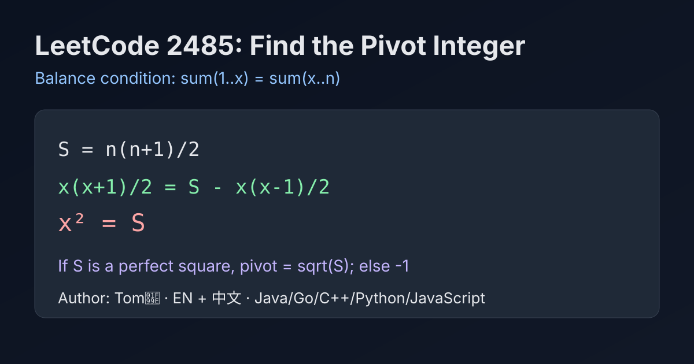

LeetCode 2485: Find the Pivot Integer (Prefix-Sum Balance via Perfect Square)
LeetCode 2485MathPrefix SumToday we solve LeetCode 2485 - Find the Pivot Integer.
Source: https://leetcode.com/problems/find-the-pivot-integer/

English
Problem Summary
Given a positive integer n, find an integer x such that the sum from 1..x equals the sum from x..n. Return x if it exists, otherwise -1.
Key Insight
Let total sum be S = n(n+1)/2. Condition is:
1 + ... + x = x + ... + n ⇒ x(x+1)/2 = S - x(x-1)/2 ⇒ x² = S.
So we only need to check whether S is a perfect square.
Algorithm
1) Compute S = n(n+1)/2.
2) Let r = floor(sqrt(S)).
3) If r*r == S, answer is r; otherwise -1.
Complexity
Time: O(1).
Space: O(1).
Reference Implementations (Java / Go / C++ / Python / JavaScript)
class Solution {
public int pivotInteger(int n) {
long s = (long) n * (n + 1) / 2;
long r = (long) Math.sqrt(s);
return r * r == s ? (int) r : -1;
}
}import "math"
func pivotInteger(n int) int {
s := int64(n) * int64(n+1) / 2
r := int64(math.Sqrt(float64(s)))
if r*r == s {
return int(r)
}
return -1
}class Solution {
public:
int pivotInteger(int n) {
long long s = 1LL * n * (n + 1) / 2;
long long r = sqrt((long double)s);
return r * r == s ? (int)r : -1;
}
};import math
class Solution:
def pivotInteger(self, n: int) -> int:
s = n * (n + 1) // 2
r = int(math.isqrt(s))
return r if r * r == s else -1/**
* @param {number} n
* @return {number}
*/
var pivotInteger = function(n) {
const s = (n * (n + 1)) / 2;
const r = Math.floor(Math.sqrt(s));
return r * r === s ? r : -1;
};中文
题目概述
给定正整数 n，求一个整数 x，满足区间和 1..x 与 x..n 相等。若存在返回 x，否则返回 -1。
核心思路
设总和 S = n(n+1)/2。题目条件可化简为：
1 + ... + x = x + ... + n ⇒ x² = S。
因此只需要判断 S 是否为完全平方数；如果是，平方根就是答案。
算法步骤
1）计算 S = n(n+1)/2。
2）计算 r = floor(sqrt(S))。
3）若 r*r == S，返回 r；否则返回 -1。
复杂度分析
时间复杂度：O(1)。
空间复杂度：O(1)。
多语言参考实现（Java / Go / C++ / Python / JavaScript）
class Solution {
public int pivotInteger(int n) {
long s = (long) n * (n + 1) / 2;
long r = (long) Math.sqrt(s);
return r * r == s ? (int) r : -1;
}
}import "math"
func pivotInteger(n int) int {
s := int64(n) * int64(n+1) / 2
r := int64(math.Sqrt(float64(s)))
if r*r == s {
return int(r)
}
return -1
}class Solution {
public:
int pivotInteger(int n) {
long long s = 1LL * n * (n + 1) / 2;
long long r = sqrt((long double)s);
return r * r == s ? (int)r : -1;
}
};import math
class Solution:
def pivotInteger(self, n: int) -> int:
s = n * (n + 1) // 2
r = int(math.isqrt(s))
return r if r * r == s else -1/**
* @param {number} n
* @return {number}
*/
var pivotInteger = function(n) {
const s = (n * (n + 1)) / 2;
const r = Math.floor(Math.sqrt(s));
return r * r === s ? r : -1;
};
Comments